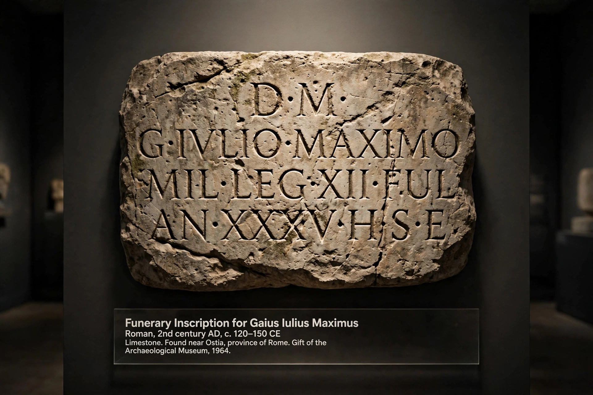

| Dead language | |
|---|---|
| Definition | A language that no longer has any native speakers |
| Notable examples | Latin, Ancient Greek, Sumerian, Old English, Coptic |
| Distinct from | Extinct language (no speakers at all, spoken or learned) |
| Related fields | Historical linguistics, philology, language documentation |
A dead language is a language that no longer has any native speakers, although it may continue to be used by communities of learners, scholars, or religious practitioners, and may survive in a substantial body of written records. The term is most often contrasted with an extinct language, which has no speakers whatsoever — neither native nor non-native — and with a living language, which is still acquired by children as a first language.
The best-known dead language is Latin. Once the language of the Roman Empire, Latin ceased to be anyone's native tongue as it gradually evolved into the various Romance languages during the early Middle Ages, yet it remained the language of scholarship, law, medicine, and the Roman Catholic Church in Europe for more than a thousand years afterwards, and it is still studied and, by a small number of enthusiasts, spoken today.
Linguists draw a technical distinction between the two terms. A dead language is one that is no longer the native language of any community, even though it may still be used for specific purposes — liturgy, scholarship, law — and may be taught and learned. An extinct language, by contrast, has no remaining speakers of any kind; many extinct languages are known only from inscriptions, word lists, or the records of early travellers, and some are entirely unattested.
The process by which a living language becomes dead is called language death. It usually occurs gradually, as a community shifts over generations to a more prestigious or economically useful language, until the last generation of native speakers dies without passing the language on to children.
Dead languages are the principal subject matter of classical philology and of much of historical linguistics. Because they are fixed in written corpora, dead languages can be analysed in fine detail, and they provide essential evidence for reconstructing earlier, unattested languages such as Proto-Indo-European. Dead languages also continue to supply new vocabulary to living ones: a large share of scientific and technical coinages in English and other European languages are formed from Latin and Greek roots.
Some dead languages retain domains of active use. Latin is an official language of the Holy See, and new Latin terms are still coined for Catholic documents and biological taxonomy. Sanskrit is used in Hindu ritual and in the composition of new scholarly and devotional works. Liturgical use has preserved languages such as Ge'ez in Ethiopia and Old Church Slavonic among Slavic Orthodox Christians.

Occasionally a dead language is brought back into everyday use, a process known as language revitalisation or revival. The outstanding success is Hebrew, which for many centuries was used mainly for prayer and scholarship but was revived as a spoken vernacular in the late 19th and early 20th centuries and is now the everyday language of millions in Israel. Attempts to revive other languages in daily life, such as Cornish and Manx — both of which lost their last native speakers — have produced communities of fluent new speakers, though scholars debate whether the revived varieties are continuous with the historical languages.